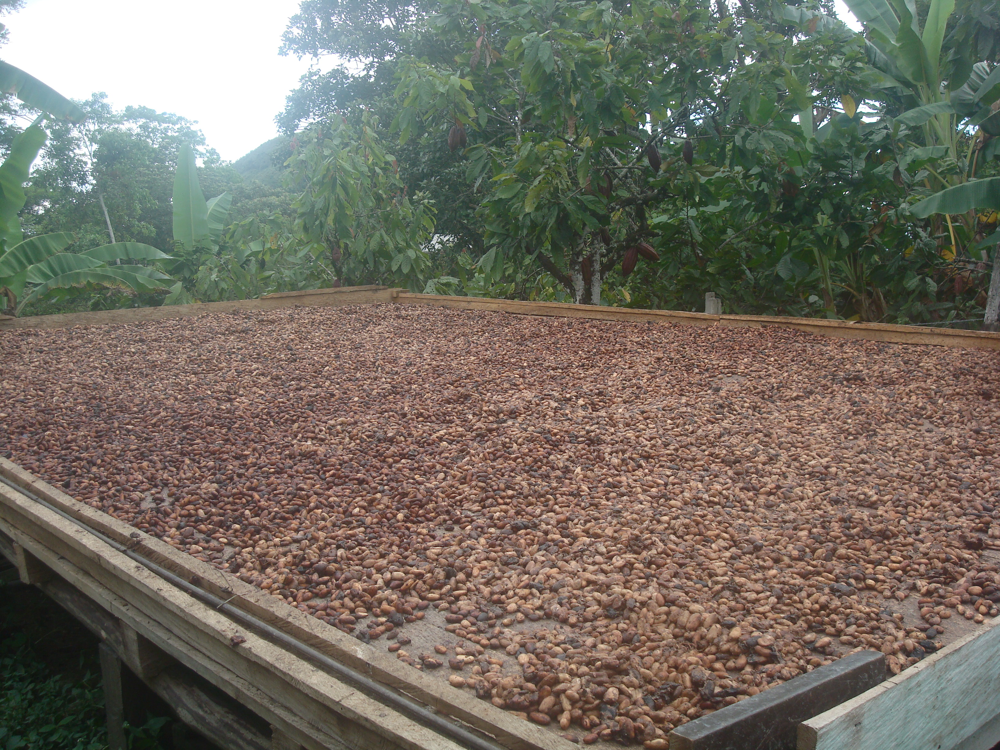

INIAP
Instituto Nacional de Investigaciones Agropecuarias del Ecuador. Custodia el banco de germoplasma de Theobroma cacao y mejora agronómica.
Historia en seis momentos
De los templos de piedra de Mayo-Chinchipe en la Amazonía a las haciendas de Vinces y la chocolatería contemporánea: seis hitos que explican por qué Ecuador es la cuna del cacao.
En el sitio arqueológico Santa Ana-La Florida (Palanda, Zamora Chinchipe), comunidades de la cultura Mayo-Chinchipe domesticaron y consumieron Theobroma cacao. Restos de almidón y teobromina en vasijas de cerámica probaron que este es el centro de origen del cacao cultivado en el mundo.
Desde las cuencas de los ríos Daule, Babahoyo y Vinces, balsas cargadas de cacao navegaban hacia el puerto de Guayaquil. Al preguntar los compradores europeos por su origen, los boteros indicaban que provenía «de río arriba», bautizando para siempre la denominación «Cacao Arriba».
Ecuador se convirtió en el principal exportador de cacao del planeta. La «pepa de oro» financió la modernización del país, el ferrocarril trasandino y las mansiones de los hacendados cacaoteros en París y Vinces, consolidando la reputación del chocolate de origen.
Tras décadas de pérdidas provocadas por las plagas de escoba de bruja y monilia, el agrónomo ambateño Homero Castro logró el cruce de la Colección Castro Naranjal 51: una planta de vigor excepcional, resistente y de alta productividad que transformó la economía rural.
Ecuador obtuvo la Denominación de Origen «Cacao Arriba». En 2018, un equipo internacional de arqueólogos y genetistas del INPC, IRD y CIRAD publicó en Nature la prueba definitiva: el árbol del cacao se domesticó 1.500 años antes en la Amazonía ecuatoriana que en Mesoamérica.
Ecuador lidera el mercado mundial con más del 60 % del cacao fino de aroma. Proyectos comunitarios y chocolateros locales elaboran barras premiadas internacionalmente que se elaboran en el mismo lugar donde crecen los árboles, preservando la agroforestería ancestral.
Del árbol a la barra
Abre cada etapa para comprender el proceso tradicional en las fincas ecuatorianas. Cada cuenca y cada maestro fermentador custodia secretos de tiempo y temperatura.
El aroma del Cacao Nacional depende en un 70 % de la fermentación correcta. El grano nunca debe sobrefermentarse para proteger sus delicados aceites florales.

El desgrane debe realizarse el mismo día de la cosecha para iniciar la fermentación sin que el mucílago se oxide.
En esta etapa nacen las notas a jazmín, ciruela y madera que caracterizan al Fino de Aroma ecuatoriano.
El secado natural permite que los ácidos volátiles se evaporen, suavizando la acidez natural del cacao.
La pasta resultante es 100 % cacao puro de origen, base de las barras finas y del chocolate tradicional.
Glosario cacaotero
Términos fundamentales de la cultura cacaotera del Ecuador que te acompañarán durante tu recorrido por el archivo.
Fuentes del archivo
Este archivo es divulgativo y compila investigaciones arqueológicas, genéticas e históricas de instituciones oficiales del Ecuador e internacionales.
Instituto Nacional de Investigaciones Agropecuarias del Ecuador. Custodia el banco de germoplasma de Theobroma cacao y mejora agronómica.
Instituto Nacional de Patrimonio Cultural. Investigó y certificó los hallazgos arqueológicos del cacao en el yacimiento de Palanda.
Publicación científica de 2018 que demostró el uso y domesticación del cacao en la Amazonía ecuatoriana hace 5.300 años.
Si tienes registros fotográficos históricos de haciendas cacaoteras o variedades locales de tu cantón, escríbenos: las incorporaremos con su crédito respectivo.